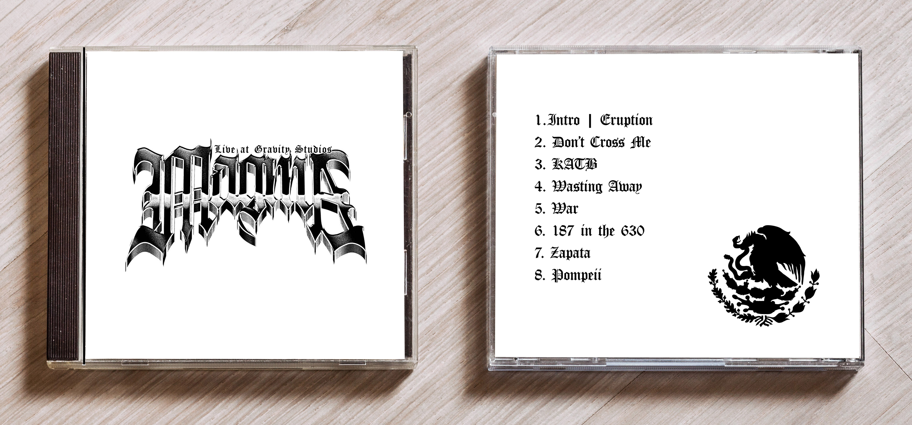
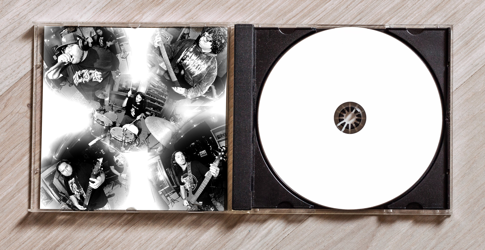

Magma Band CD Cover
This project delivers a striking CD packaging design for the hardcore band Magma. Utilizing raw black-and-white photography, high-contrast typography, and a minimalist layout, the visuals capture the visceral energy of the band's live performances. The comprehensive deliverables spanned front and back covers, interior artwork, and print-ready production files, creating a cohesive and intense visual identity.
Scope: CD Packaging Design, Typography, Print Production, Art Direction
Software: Adobe Photoshop
Year: Spring, 2026


